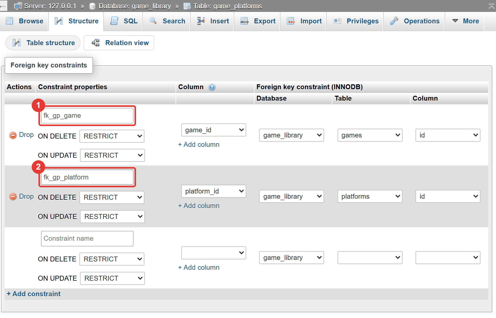
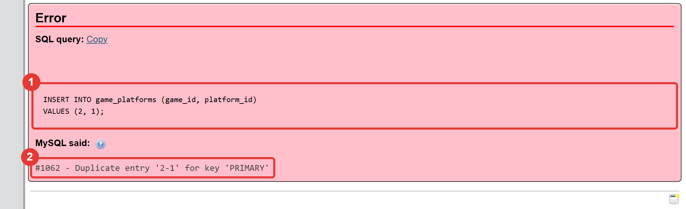
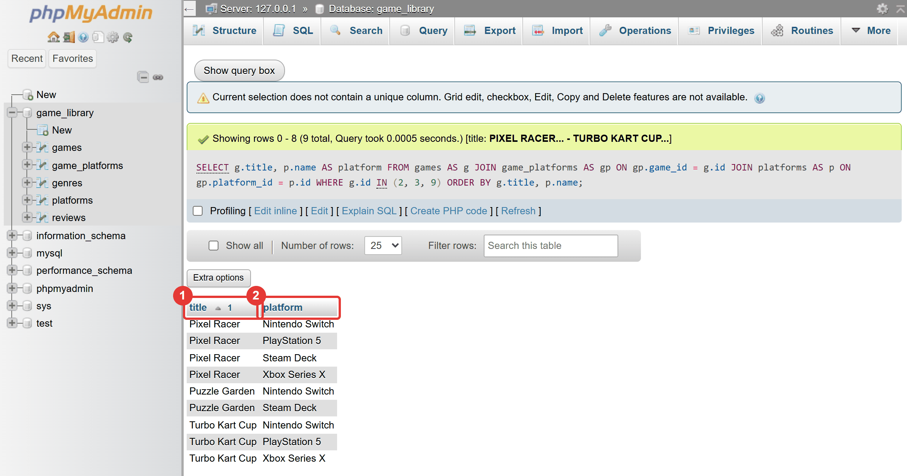
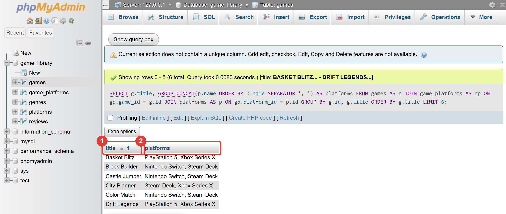
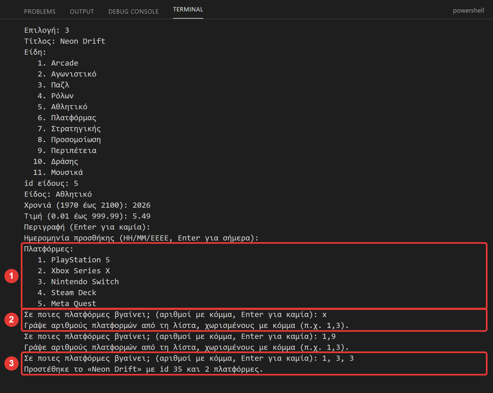
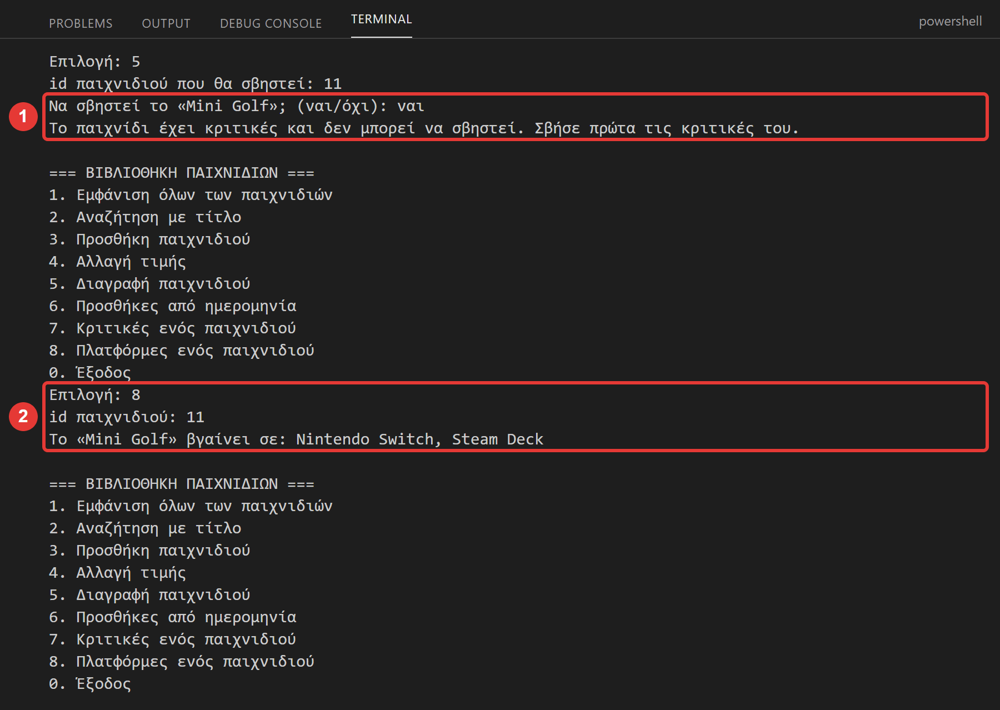

Μάθημα 14: Πολλά-προς-πολλά: ο πίνακας σύνδεσης¶
Βάση δεδομένων και Python: η σχέση πολλά-προς-πολλά, ο πίνακας σύνδεσης με σύνθετο πρωτεύον κλειδί, το JOIN τριών πινάκων, η GROUP_CONCAT, και μια εφαρμογή που γράφει και σβήνει γραμμές σύνδεσης
Διάρκεια: 2 κύκλοι × περίπου 45′ εργασία (2 διδακτικές ώρες)
Φύλλο εργασίας
Αυτή η σελίδα εξηγεί τις έννοιες. Οι ασκήσεις και οι οδηγίες για κάθε κύκλο βρίσκονται στο Φύλλο εργασίας 14. Δούλεψε με τις δύο σελίδες ανοιχτές.
Αρχεία εργαστηρίου¶
| Αρχείο | Κύκλος |
|---|---|
| 01-start-state.sql | πριν αρχίσεις |
| 02-junction.sql | 1 |
| 03-links.sql | 1 |
| 04-three-tables.sql | 2 |
| 05-app.py | 2 |
Η αποστολή¶
Από το Μάθημα 2 η βάση έχει έναν πίνακα platforms (PlayStation 5, Xbox Series X, Nintendo Switch, Steam Deck, Meta Quest),
αλλά δεν συνδέεται με τα παιχνίδια. Δεν μπορείς να ρωτήσεις «σε ποιες πλατφόρμες βγαίνει το Pixel Racer;» ή «ποια
παιχνίδια έχει το Steam Deck;». Το πρόβλημα είναι διαφορετικό από των ειδών: ένα είδος έχει πολλά παιχνίδια, αλλά
κάθε παιχνίδι ανήκει σε ένα είδος. Εδώ και οι δύο πλευρές είναι «πολλά»: ένα παιχνίδι βγαίνει σε πολλές
πλατφόρμες, και μια πλατφόρμα έχει πολλά παιχνίδια. Είναι η σχέση πολλά-προς-πολλά (N:N) που σου είπαμε στο Μάθημα 11
ότι θέλει τρίτο πίνακα.
Σήμερα φτιάχνεις αυτόν τον πίνακα, ρωτάς τη βάση με JOIN τριών πινάκων, και διορθώνεις την εφαρμογή ώστε να ξέρει τις
πλατφόρμες των παιχνιδιών.
Στο τέλος θα μπορείς¶
- να εξηγείς γιατί μια σχέση πολλά-προς-πολλά δεν λύνεται με μία στήλη-ξένο κλειδί ούτε με λίστα μέσα σε ένα κελί.
- να φτιάχνεις πίνακα σύνδεσης με σύνθετο πρωτεύον κλειδί και δύο ξένα κλειδιά.
- να προσθέτεις γραμμές σύνδεσης και να εξηγείς τα σφάλματα
#1062και#1452σε αυτόν τον πίνακα. - να γράφεις
JOINτριών πινάκων, περνώντας από τον πίνακα σύνδεσης. - να αναγνωρίζεις την παγίδα του πολλαπλασιασμού των γραμμών και να μετράς με
COUNT(DISTINCT …). - να βρίσκεις όσα δεν έχουν ταίρι (παιχνίδι χωρίς πλατφόρμα, πλατφόρμα χωρίς παιχνίδια) και να τα μετράς σωστά.
- να χρησιμοποιείς τη
GROUP_CONCATγια μία γραμμή ανά παιχνίδι με όλες τις πλατφόρμες του. - να γράφεις και να σβήνεις παιχνίδι μαζί με τις γραμμές σύνδεσής του από την Python, με ένα
commit().
Πριν αρχίσεις¶
- Ξεκίνα τη MySQL και τον Apache από το XAMPP Control Panel.
- Φτιάξε έναν φάκελο
14-many-to-manyμέσα στον φάκελο των μαθημάτων και κατέβασε εκεί τα πέντε αρχεία του πίνακα. Κράτησε ακριβώς τα ονόματα. Άνοιξε τον φάκελο στο VS Code και άνοιξε τερματικό. - Φέρε τη βάση στην κατάσταση εκκίνησης: στο phpMyAdmin επίλεξε τη βάση
game_library, άνοιξε την καρτέλα Import, διάλεξε το01-start-state.sqlκαι πάτα Import. - Έλεγξε στην καρτέλα Browse ότι ο
gamesέχει 30 γραμμές (χωρίς στήληgenre), οgenres11, οreviews12 και οplatforms5. Ο πίνακαςgame_platformsδεν υπάρχει ακόμη.
Το αρχείο εκκίνησης σβήνει τα δεδομένα σου
Το 01-start-state.sql σβήνει τους πίνακες games, genres, reviews, platforms, players και όσους φτιάχνεις
σήμερα (game_platforms, game_tags, tags) και τους φτιάχνει από την αρχή. Αν σήμερα χαλάσεις τα δεδομένα, τρέξε
το ξανά και ξεκινάς από την αρχή.
Ο κύκλος εργασίας
Πρόβλεψη → εκτέλεση → σύγκριση → εξήγηση. Σήμερα πρόβλεψε πόσες γραμμές θα βγουν, και αν η εντολή θα πετύχει ή θα δώσει σφάλμα.
Κύκλος 1 — Ο πίνακας σύνδεσης¶
Σε αυτόν τον κύκλο φτιάχνεις τον πίνακα που συνδέει τα παιχνίδια με τις πλατφόρμες και τον γεμίζεις.
1.1 Γιατί δεν αρκεί μία στήλη¶
Δοκίμασε να λύσεις το πρόβλημα με όσα ξέρεις:
| Προσπάθεια | Τι πάει στραβά |
|---|---|
Μια στήλη platform_id στον games |
Χωράει μία μόνο πλατφόρμα ανά παιχνίδι. |
Μια στήλη platforms στον games με κείμενο 'PlayStation 5, Steam Deck' |
Δεν μπορείς να ψάξεις ή να ενώσεις με JOIN· αν μετονομαστεί μια πλατφόρμα, πρέπει να διορθώσεις κείμενα. Η τιμή δεν είναι μία πληροφορία. |
| Η ίδια γραμμή του παιχνιδιού επαναλαμβάνεται μία φορά για κάθε πλατφόρμα | Επανάληψη δεδομένων (Μάθημα 11)· και ο τίτλος είναι UNIQUE, άρα δεν επιτρέπεται. |
Μια στήλη game_id στον platforms |
Το ίδιο πρόβλημα αντίστροφα: ένα παιχνίδι ανά πλατφόρμα. |
Δεν υπάρχει σωστό σημείο για μία στήλη-ξένο κλειδί, γιατί η σχέση είναι «πολλά» και από τις δύο πλευρές.
1.2 Η λύση: ένας πίνακας για τις συνδέσεις¶
Φτιάχνουμε έναν τρίτο πίνακα, τον game_platforms, με μία γραμμή για κάθε ζευγάρι παιχνίδι–πλατφόρμα:
games game_platforms platforms
┌────┬───────────────┐ ┌─────────┬─────────────┐ ┌────┬─────────────────┐
│ id │ title │ │ game_id │ platform_id │ │ id │ name │
├────┼───────────────┤ ├─────────┼─────────────┤ ├────┼─────────────────┤
│ 2 │ Pixel Racer │ │ 2 │ 1 │ │ 1 │ PlayStation 5 │
│ 3 │ Puzzle Garden │ │ 2 │ 4 │ │ 4 │ Steam Deck │
│ … │ … │ │ 3 │ 4 │ │ … │ … │
└────┴───────────────┘ └─────────┴─────────────┘ └────┴─────────────────┘
Κάθε γραμμή του πίνακα σύνδεσης λέει ένα γεγονός, ταιριάζοντας το game_id με το id του παιχνιδιού και το platform_id με το id
της πλατφόρμας: η γραμμή (2, 1) λέει «το Pixel Racer βγαίνει στο PlayStation 5», η (2, 4) «το Pixel Racer βγαίνει στο Steam Deck»,
και η (3, 4) «το Puzzle Garden βγαίνει στο Steam Deck». Το «Pixel Racer» έχει τέσσερις γραμμές (μία για κάθε πλατφόρμα του), και
το «Steam Deck» έχει μία γραμμή για κάθε παιχνίδι του.
Μια σχέση πολλά-προς-πολλά είναι στην πραγματικότητα δύο σχέσεις ένα-προς-πολλά:
- ένα παιχνίδι → πολλές γραμμές σύνδεσης (ξένο κλειδί
game_id), - μια πλατφόρμα → πολλές γραμμές σύνδεσης (ξένο κλειδί
platform_id).
Ο κανόνας του Μαθήματος 11 ισχύει όπως πάντα: το ξένο κλειδί μπαίνει στην πλευρά «πολλά». Ο πίνακας σύνδεσης είναι η πλευρά «πολλά» και των δύο.
1.3 Το σύνθετο πρωτεύον κλειδί¶
Ποιο είναι το πρωτεύον κλειδί του game_platforms; Καμία από τις δύο στήλες μόνη της: το game_id 2 υπάρχει τέσσερις φορές. Αυτό
που δεν πρέπει να επαναλαμβάνεται είναι το ζευγάρι. Γι' αυτό το πρωτεύον κλειδί είναι σύνθετο, από δύο στήλες:
CREATE TABLE game_platforms (
game_id INT NOT NULL,
platform_id INT NOT NULL,
PRIMARY KEY (game_id, platform_id),
CONSTRAINT fk_gp_game FOREIGN KEY (game_id) REFERENCES games (id),
CONSTRAINT fk_gp_platform FOREIGN KEY (platform_id) REFERENCES platforms (id)
);
- Το
PRIMARY KEY (game_id, platform_id)λέει: «το ζευγάρι πρέπει να είναι μοναδικό». Το ίδιο παιχνίδι σε άλλες πλατφόρμες επιτρέπεται, και η ίδια πλατφόρμα με άλλα παιχνίδια επίσης. Το ίδιο ακριβώς ζευγάρι δεύτερη φορά δίνει#1062 - Duplicate entry '2-1' for key 'PRIMARY'. - Τα δύο ξένα κλειδιά ελέγχουν ότι το παιχνίδι και η πλατφόρμα υπάρχουν (
#1452, όπως στο Μάθημα 11). - Δεν χρειάζεται δική του στήλη
id: το ζευγάρι αρκεί. Τα ονόματα των περιορισμών ακολουθούν τη σύμβασηfk_σύντμηση_πίνακας(gp=game_platforms).

Οι πίνακες σύνδεσης μπορούν να έχουν και δικές τους στήλες
Ο πίνακας σύνδεσης περιγράφει το ζευγάρι, άρα μπορεί να κρατά και πληροφορίες για το ζευγάρι: π.χ. την ημερομηνία κυκλοφορίας του παιχνιδιού σε εκείνη την πλατφόρμα. Δεν το χρειαζόμαστε σήμερα.
Στάδιο 1 — Ο πίνακας σύνδεσης¶
Άνοιξε το 02-junction.sql. Συμπλήρωσε τα τέσσερα κενά (____) και τρέξε τις εντολές μία-μία, με τη σειρά. Πρόβλεψε
πρώτα αν κάθε εντολή θα πετύχει ή θα δώσει σφάλμα. Τα ερωτήματα 5, 6 και 7 δίνουν σφάλμα επίτηδες.
-- Στάδιο 1 — Ο πίνακας σύνδεσης game_platforms.
--
-- Πριν αρχίσεις: τρέξε το 01-start-state.sql (καρτέλα Import).
--
-- Πώς το τρέχεις:
-- 1. Συμπλήρωσε τα κενά (____) σε έναν επεξεργαστή κειμένου.
-- 2. Τρέξε κάθε εντολή ΞΕΧΩΡΙΣΤΑ στην καρτέλα SQL της βάσης game_library, με τη σειρά.
-- 3. ΠΡΩΤΑ πρόβλεψε τι θα γίνει: πόσες γραμμές θα έχει το αποτέλεσμα, ή αν θα δώσει σφάλμα και ποιο.
-- Ερώτημα 1 (έτοιμο): οι πλατφόρμες. Ένα παιχνίδι βγαίνει σε ΠΟΛΛΕΣ πλατφόρμες, και μια πλατφόρμα έχει ΠΟΛΛΑ παιχνίδια
SELECT id, name
FROM platforms
ORDER BY id;
-- Ερώτημα 2: ο πίνακας σύνδεσης. Κάθε γραμμή του λέει: «αυτό το παιχνίδι βγαίνει σε αυτή την πλατφόρμα».
-- Το πρωτεύον κλειδί είναι το ΖΕΥΓΑΡΙ (game_id, platform_id), και κάθε στήλη του είναι ξένο κλειδί
CREATE TABLE game_platforms (
game_id INT NOT NULL,
platform_id INT NOT NULL,
PRIMARY KEY (game_id, ____),
CONSTRAINT fk_gp_game FOREIGN KEY (game_id) REFERENCES games (id),
CONSTRAINT fk_gp_platform FOREIGN KEY (platform_id) ____ platforms (____)
);
-- Ερώτημα 3: το «Pixel Racer» (id 2) βγαίνει στις πλατφόρμες 1, 2, 3 και 4. Μία εντολή, τέσσερις γραμμές
INSERT INTO game_platforms (game_id, platform_id)
VALUES (2, 1), (2, 2), (2, ____), (2, 4);
-- Ερώτημα 4 (έτοιμο): τι περιέχει ο πίνακας σύνδεσης;
SELECT game_id, platform_id
FROM game_platforms
ORDER BY game_id, platform_id;
-- Ερώτημα 5 (έτοιμο): ΘΑ ΔΩΣΕΙ ΣΦΑΛΜΑ. Το ίδιο ζευγάρι δεύτερη φορά
INSERT INTO game_platforms (game_id, platform_id)
VALUES (2, 1);
-- Ερώτημα 6 (έτοιμο): ΘΑ ΔΩΣΕΙ ΣΦΑΛΜΑ. Παιχνίδι που δεν υπάρχει
INSERT INTO game_platforms (game_id, platform_id)
VALUES (999, 1);
-- Ερώτημα 7 (έτοιμο): ΘΑ ΔΩΣΕΙ ΣΦΑΛΜΑ. Πλατφόρμα που δεν υπάρχει
INSERT INTO game_platforms (game_id, platform_id)
VALUES (2, 99);

1.4 Πολλές γραμμές με μία εντολή¶
Ένα INSERT μπορεί να προσθέσει πολλές γραμμές μαζί: γράφεις πολλές παρενθέσεις τιμών χωρισμένες με κόμμα:
Είναι ο ίδιος τρόπος που η executemany του Μαθήματος 5 στέλνει πολλές γραμμές. Στο Στάδιο 2 ένα έτοιμο αρχείο προσθέτει όλες τις
υπόλοιπες συνδέσεις (τα 27 παιχνίδια έχουν συνολικά 63 γραμμές σύνδεσης), και εσύ ελέγχεις τα δεδομένα.
Στάδιο 2 — Γεμίζω τον πίνακα και ελέγχω¶
Άνοιξε το 03-links.sql. Το ερώτημα 1 (έτοιμο) προσθέτει τις υπόλοιπες γραμμές: τρέξ' το μία φορά (δεύτερη φορά δίνει #1062).
Συμπλήρωσε τα δύο κενά και τρέξε τα υπόλοιπα ερωτήματα. Πρόσεξε το ερώτημα 4: δεν βλέπεις και τις πέντε πλατφόρμες.
-- Στάδιο 2 — Γεμίζω τον πίνακα σύνδεσης και ελέγχω τα δεδομένα.
--
-- Πριν αρχίσεις: έχεις κάνει το Στάδιο 1 (ο πίνακας game_platforms υπάρχει και έχει τις 4 γραμμές του «Pixel Racer»).
--
-- Πώς το τρέχεις:
-- 1. Συμπλήρωσε τα κενά (____) σε έναν επεξεργαστή κειμένου.
-- 2. Τρέξε κάθε εντολή ΞΕΧΩΡΙΣΤΑ στην καρτέλα SQL της βάσης game_library, με τη σειρά.
-- 3. ΠΡΩΤΑ πρόβλεψε τι θα γίνει: πόσες γραμμές θα έχει το αποτέλεσμα, ή αν θα δώσει σφάλμα και ποιο.
-- Ερώτημα 1 (έτοιμο): οι υπόλοιπες γραμμές σύνδεσης, για τα άλλα παιχνίδια. Τρέξ' το ΜΙΑ φορά (δεύτερη φορά δίνει #1062)
INSERT INTO game_platforms (game_id, platform_id) VALUES
(1, 3), (1, 4),
(3, 3), (3, 4),
(4, 1), (4, 2), (4, 4),
(5, 1), (5, 2), (5, 3),
(6, 3), (6, 4),
(7, 2), (7, 4),
(8, 3), (8, 4),
(9, 1), (9, 2), (9, 3),
(10, 1), (10, 2), (10, 4),
(11, 3), (11, 4),
(14, 1), (14, 2),
(15, 3), (15, 4),
(16, 1), (16, 2), (16, 3), (16, 4),
(19, 1), (19, 2),
(20, 1), (20, 2),
(21, 3), (21, 4),
(22, 3), (22, 4),
(23, 3),
(24, 1), (24, 2), (24, 3),
(25, 1), (25, 2),
(26, 1), (26, 2), (26, 3),
(27, 1), (27, 2),
(28, 1), (28, 2), (28, 4),
(29, 1), (29, 2),
(30, 4),
(31, 2), (31, 4);
-- Ερώτημα 2 (έτοιμο): πόσες γραμμές σύνδεσης υπάρχουν; (η καθεμιά είναι ένα ζευγάρι παιχνίδι–πλατφόρμα)
SELECT COUNT(*) AS links
FROM game_platforms;
-- Ερώτημα 3: τα τρία παιχνίδια που βγαίνουν στις περισσότερες πλατφόρμες (δες ότι εμφανίζονται ως αριθμοί, όχι τίτλοι)
SELECT game_id, COUNT(*) AS n
FROM game_platforms
GROUP BY ____
ORDER BY n DESC, game_id
LIMIT 3;
-- Ερώτημα 4 (έτοιμο): πόσα παιχνίδια έχει κάθε πλατφόρμα; Πόσες γραμμές βγαίνουν; Λείπει κάποια πλατφόρμα;
SELECT platform_id, COUNT(*) AS games_n
FROM game_platforms
GROUP BY platform_id
ORDER BY platform_id;
-- Ερώτημα 5: πόσα ΔΙΑΦΟΡΕΤΙΚΑ παιχνίδια έχουν τουλάχιστον μία πλατφόρμα;
SELECT COUNT(DISTINCT ____) AS games_with_platforms
FROM game_platforms;
Συνέχισε στο Φύλλο εργασίας.
Κύκλος 2 — JOIN τριών πινάκων και η εφαρμογή¶
Στον δεύτερο κύκλο ρωτάς τη βάση με JOIN που περνά από τον πίνακα σύνδεσης, και προσαρμόζεις την εφαρμογή.
2.1 Το JOIN τριών πινάκων¶
Μέχρι τώρα έβλεπες αριθμούς: τα game_id και platform_id του game_platforms. Για να δεις ονόματα, ενώνεις τρεις πίνακες.
Το JOIN περνά από τον πίνακα σύνδεσης: παιχνίδια → σύνδεση → πλατφόρμες:
SELECT g.title, p.name AS platform
FROM games AS g
JOIN game_platforms AS gp ON gp.game_id = g.id
JOIN platforms AS p ON gp.platform_id = p.id
ORDER BY g.title, p.name;
Είναι δύο JOIN, και καθένα έχει τον δικό του ON, με τον κανόνα που ξέρεις (ξένο κλειδί = πρωτεύον κλειδί):
gp.game_id = g.id: η γραμμή σύνδεσης δείχνει σε παιχνίδι.gp.platform_id = p.id: η ίδια γραμμή δείχνει και σε πλατφόρμα.
Το αποτέλεσμα έχει μία γραμμή για κάθε γραμμή του πίνακα σύνδεσης (63). Με ένα WHERE φιλτράρεις όπως πάντα, με το όνομα που θες:
WHERE g.title = 'Pixel Racer' (σε ποιες πλατφόρμες βγαίνει) ή WHERE p.name = 'Steam Deck' (ποια παιχνίδια έχει).

2.2 Η παγίδα του πολλαπλασιασμού¶
Στο αποτέλεσμα κάθε παιχνίδι εμφανίζεται μία φορά για κάθε πλατφόρμα του: το «Pixel Racer» τέσσερις φορές. Γι' αυτό:
| Μέτρηση | Τι μετρά | Αποτέλεσμα |
|---|---|---|
COUNT(*) |
τις γραμμές του αποτελέσματος (= γραμμές σύνδεσης) | 63 |
COUNT(DISTINCT g.id) |
τα διαφορετικά παιχνίδια | 27 |
Όταν ένα JOIN έχει σχέση «πολλά», το πλήθος των γραμμών δεν είναι το πλήθος των παιχνιδιών. Ρώτα πάντα: «τι μετράω;». Αν θες
παιχνίδια, χρησιμοποίησε COUNT(DISTINCT g.id).
2.3 Όσα δεν έχουν ταίρι¶
Δύο ερωτήματα που ο INNER JOIN δεν απαντά (Μάθημα 12):
- Ποια παιχνίδια δεν έχουν καμία πλατφόρμα;
LEFT JOINαπό τονgamesκαιWHERE gp.game_id IS NULL. (Τρία: τα νεότερα παιχνίδια, που δεν τους έχουν δοθεί ακόμη πλατφόρμες.) - Ποια πλατφόρμα δεν έχει κανένα παιχνίδι;
LEFT JOINαπό τονplatformsκαιWHERE gp.game_id IS NULL. (Το «Meta Quest».)
Ο πίνακας που θέλεις να κρατήσεις μπαίνει αριστερά. Και όταν μετράς με LEFT JOIN, χρησιμοποίησε COUNT(gp.game_id)
και όχι COUNT(*): το COUNT(στήλη) δεν μετρά τα NULL, οπότε το «Meta Quest» βγαίνει 0 και όχι 1 (το ξέρεις από το
Μάθημα 10).
2.4 Μία γραμμή ανά παιχνίδι: GROUP_CONCAT¶
Το αποτέλεσμα με μία γραμμή για κάθε ζευγάρι είναι μεγάλο. Συχνά θες μία γραμμή για κάθε παιχνίδι, με όλες τις πλατφόρμες του
σε ένα κελί. Το κάνει η GROUP_CONCAT, που ενώνει τις τιμές μιας ομάδας σε ένα κείμενο:
SELECT g.title, GROUP_CONCAT(p.name ORDER BY p.name SEPARATOR ', ') AS platforms
FROM games AS g
JOIN game_platforms AS gp ON gp.game_id = g.id
JOIN platforms AS p ON gp.platform_id = p.id
GROUP BY g.id, g.title
ORDER BY g.title;
- Το
ORDER BYμέσα στη συνάρτηση ταξινομεί τα ονόματα της ομάδας. - Το
SEPARATOR ', 'ορίζει τι μπαίνει ανάμεσά τους. - Με
GROUP BY g.id, g.titleέχεις μία γραμμή ανά παιχνίδι.

Στάδιο 3 — JOIN τριών πινάκων¶
Άνοιξε το 04-three-tables.sql. Συμπλήρωσε τα έξι κενά και τρέξε τις εντολές μία-μία, με τη σειρά. Πρόβλεψε πρώτα πόσες
γραμμές θα έχει κάθε αποτέλεσμα. Το ερώτημα 9 δίνει σφάλμα επίτηδες.
-- Στάδιο 3 — JOIN τριών πινάκων: παιχνίδια, πίνακας σύνδεσης και πλατφόρμες.
--
-- Πριν αρχίσεις: έχεις κάνει τα Στάδια 1 και 2 (ο game_platforms έχει 63 γραμμές). Τα ερωτήματα εκτός από το τελευταίο
-- δεν αλλάζουν δεδομένα.
--
-- Πώς το τρέχεις:
-- 1. Συμπλήρωσε τα κενά (____) σε έναν επεξεργαστή κειμένου.
-- 2. Τρέξε κάθε εντολή ΞΕΧΩΡΙΣΤΑ στην καρτέλα SQL της βάσης game_library, με τη σειρά.
-- 3. ΠΡΩΤΑ πρόβλεψε τι θα γίνει: πόσες γραμμές θα έχει το αποτέλεσμα, ή αν θα δώσει σφάλμα και ποιο.
-- Ερώτημα 1: όλα τα ζευγάρια παιχνίδι–πλατφόρμα, με ΟΝΟΜΑΤΑ. Το JOIN περνά από τον πίνακα σύνδεσης: games → game_platforms → platforms
SELECT g.title, p.name AS platform
FROM games AS g
JOIN game_platforms AS gp ON gp.game_id = g.id
JOIN platforms AS p ON gp.platform_id = ____.id
ORDER BY g.title, p.name;
-- Ερώτημα 2 (έτοιμο): σε ποιες πλατφόρμες βγαίνει το «Pixel Racer»;
SELECT p.name AS platform
FROM games AS g
JOIN game_platforms AS gp ON gp.game_id = g.id
JOIN platforms AS p ON gp.platform_id = p.id
WHERE g.title = 'Pixel Racer'
ORDER BY p.name;
-- Ερώτημα 3: ποια παιχνίδια βγαίνουν στο «Steam Deck»; (τίτλος και τιμή, φθηνότερα πρώτα)
SELECT g.title, g.price
FROM games AS g
JOIN game_platforms AS gp ON gp.game_id = g.id
JOIN platforms AS p ON gp.platform_id = p.id
WHERE p.name = '____'
ORDER BY g.price, g.title;
-- Ερώτημα 4 (έτοιμο): η παγίδα του πολλαπλασιασμού. Πόσες γραμμές έχει το αποτέλεσμα, και πόσα διαφορετικά παιχνίδια;
SELECT COUNT(*) AS rows_n, COUNT(DISTINCT g.id) AS games_n
FROM games AS g
JOIN game_platforms AS gp ON gp.game_id = g.id
JOIN platforms AS p ON gp.platform_id = p.id;
-- Ερώτημα 5: ποια παιχνίδια ΔΕΝ έχουν καμία πλατφόρμα; (LEFT JOIN και IS NULL, όπως στο Μάθημα 12)
SELECT g.id, g.title
FROM games AS g
LEFT JOIN game_platforms AS gp ON gp.game_id = g.id
WHERE gp.____ IS NULL
ORDER BY g.id;
-- Ερώτημα 6: ποια πλατφόρμα δεν έχει κανένα παιχνίδι; Ο πίνακας που θέλεις να κρατήσεις πρέπει να είναι ΑΡΙΣΤΕΡΑ
SELECT p.name
FROM ____ AS p
LEFT JOIN game_platforms AS gp ON gp.platform_id = p.id
WHERE gp.game_id IS NULL;
-- Ερώτημα 7: πόσα παιχνίδια έχει κάθε πλατφόρμα, ΣΥΜΠΕΡΙΛΑΜΒΑΝΟΜΕΝΗΣ αυτής που δεν έχει κανένα;
SELECT p.name, COUNT(____.game_id) AS games_n
FROM platforms AS p
LEFT JOIN game_platforms AS gp ON gp.platform_id = p.id
GROUP BY p.id, p.name
ORDER BY games_n DESC, p.name;
-- Ερώτημα 8: ΜΙΑ γραμμή για κάθε παιχνίδι, με όλες τις πλατφόρμες του σε ένα κελί. Η GROUP_CONCAT ενώνει τις τιμές μιας ομάδας σε ένα κείμενο
SELECT g.title, ____(p.name ORDER BY p.name SEPARATOR ', ') AS platforms
FROM games AS g
JOIN game_platforms AS gp ON gp.game_id = g.id
JOIN platforms AS p ON gp.platform_id = p.id
GROUP BY g.id, g.title
ORDER BY g.title
LIMIT 8;
-- Ερώτημα 9 (έτοιμο): ΘΑ ΔΩΣΕΙ ΣΦΑΛΜΑ. Διαγραφή παιχνιδιού που έχει πλατφόρμες
DELETE FROM games
WHERE id = 3;
2.5 Σβήνω ένα παιχνίδι με πλατφόρμες¶
Το ερώτημα 9 του Σταδίου 3 έδωσε #1451: το ξένο κλειδί fk_gp_game δεν αφήνει να σβήσεις ένα παιχνίδι που έχει γραμμές
σύνδεσης (Μάθημα 11). Πρέπει πρώτα να σβήσεις τις γραμμές του πίνακα σύνδεσης, και μετά το παιχνίδι:
Είναι δύο εντολές που πρέπει να πετύχουν και οι δύο ή καμία. Αν η δεύτερη αποτύχει (π.χ. το παιχνίδι έχει και κριτικές,
#1451 από τον reviews), η πρώτη πρέπει να ακυρωθεί, αλλιώς το παιχνίδι θα έχει χάσει τις πλατφόρμες του χωρίς να σβηστεί.
Στην Python το πετυχαίνεις με ένα μόνο commit() στο τέλος και rollback() αν κάτι πάει στραβά: οι δύο εντολές
μπαίνουν στην ίδια συναλλαγή. Στο Μάθημα 18 θα μάθεις πώς δουλεύουν οι συναλλαγές.
2.6 Η εφαρμογή και οι πλατφόρμες¶
Η εφαρμογή του Σταδίου 4 έχει τέσσερις αλλαγές. Οι υπόλοιπες συναρτήσεις μένουν ίδιες με το Μάθημα 13.
(α) Η ask_platforms και η add_game. Μετά τα υπόλοιπα στοιχεία, η add_game δείχνει τις πλατφόρμες και ρωτά σε ποιες βγαίνει το
παιχνίδι (π.χ. 1,3). Η ask_platforms σπάει το κείμενο με split(","), ελέγχει με το λεξικό names ότι κάθε id υπάρχει, και
επιστρέφει λίστα. Μετά το INSERT του παιχνιδιού, η add_game γράφει όλα τα ζευγάρια με μία executemany και κάνει ένα
commit() για το παιχνίδι και τις πλατφόρμες μαζί:
def ask_platforms(connection):
"""Δείχνει τις πλατφόρμες και ρωτά σε ποιες βγαίνει το παιχνίδι. Επιστρέφει λίστα από id (μπορεί να είναι κενή)."""
cursor = connection.cursor(dictionary=True)
cursor.execute("SELECT id, name FROM platforms ORDER BY id")
platforms = cursor.fetchall()
cursor.close()
# Ένα λεξικό «id → όνομα» για τις πλατφόρμες της βάσης
names = {}
print("Πλατφόρμες:")
for platform in platforms:
names[platform["id"]] = platform["name"]
print(f" {platform['id']:>2}. {platform['name']}")
while True:
text = input("Σε ποιες πλατφόρμες βγαίνει; (αριθμοί με κόμμα, Enter για καμία): ").strip()
if text == "":
return []
chosen = []
valid = True
# TODO 1: το κείμενο «1,3» σπάει στα κομμάτια «1» και «3» με τη split (το κόμμα είναι ο διαχωριστής)
for part in text.split(____):
try:
platform_id = int(part)
except ValueError:
valid = False
break
# TODO 2: το id πρέπει να υπάρχει στο λεξικό names (το «not in» είναι το αντίθετο του «in»)
if platform_id ____ names:
valid = False
break
if platform_id not in chosen: # κάθε πλατφόρμα μία φορά: το ζευγάρι (game_id, platform_id) είναι πρωτεύον κλειδί
chosen.append(platform_id)
if valid:
return chosen
print("Γράψε αριθμούς πλατφορμών από τη λίστα, χωρισμένους με κόμμα (π.χ. 1,3).")
def add_game(connection):
"""Ζητά τα στοιχεία ενός παιχνιδιού και των πλατφορμών του (με έλεγχο) και τα προσθέτει στη βάση."""
title = ask_text("Τίτλος: ")
genre_id = ask_genre(connection)
year = ask_int("Χρονιά (1970 έως 2100): ", 1970, 2100)
price = ask_price("Τιμή (0.01 έως 999.99): ")
description = input("Περιγραφή (Enter για καμία): ").strip()
if description == "":
description = None # το None της Python γίνεται NULL στη βάση
added_on = ask_date(
"Ημερομηνία προσθήκης (ΗΗ/ΜΜ/ΕΕΕΕ, Enter για σήμερα): ", EARLIEST, date.today(), default=date.today()
)
platform_ids = ask_platforms(connection)
cursor = connection.cursor()
try:
cursor.execute(
"INSERT INTO games (title, release_year, price, description, added_on, genre_id) VALUES (%s, %s, %s, %s, %s, %s)",
(title, year, price, description, added_on, genre_id),
)
game_id = cursor.lastrowid # το id του νέου παιχνιδιού (πριν από την επόμενη εντολή)
# Ένα ζευγάρι (game_id, platform_id) για κάθε πλατφόρμα που διάλεξε ο χρήστης
links = []
for platform_id in platform_ids:
links.append((game_id, platform_id))
if len(links) > 0:
# TODO 3: ΜΙΑ εντολή για όλα τα ζευγάρια της λίστας (όπως στο Μάθημα 5)
cursor.____("INSERT INTO game_platforms (game_id, platform_id) VALUES (%s, %s)", links)
connection.commit() # ΕΝΑ commit: το παιχνίδι και οι πλατφόρμες του μπαίνουν μαζί
print(f"Προστέθηκε το «{title}» με id {game_id} και {len(links)} πλατφόρμες.")
except mysql.connector.IntegrityError as error:
connection.rollback() # αν κάτι αποτύχει, δεν μένει τίποτα μισό
if error.errno == 1062:
print(f"Υπάρχει ήδη παιχνίδι με τίτλο «{title}».")
elif error.errno == 1452:
print("Το είδος ή η πλατφόρμα που διάλεξες δεν υπάρχει.")
else:
print("Η βάση δεν δέχτηκε τα δεδομένα:", error.msg)
cursor.close()
(β) Η delete_game σβήνει πρώτα τις γραμμές σύνδεσης και μετά το παιχνίδι, με ένα commit(). Αν το παιχνίδι έχει κριτικές (#1451),
το rollback() ακυρώνει και τον πρώτο DELETE: οι πλατφόρμες του μένουν όπως ήταν.
def delete_game(connection):
"""Ζητά ένα id, δείχνει τον τίτλο, ζητά επιβεβαίωση και σβήνει το παιχνίδι μαζί με τις πλατφόρμες του (όχι αν έχει κριτικές)."""
game_id = ask_int("id παιχνιδιού που θα σβηστεί: ", 1, 100000)
title = find_title(connection, game_id)
if title is None:
print("Δεν υπάρχει παιχνίδι με αυτό το id.")
return
answer = input(f"Να σβηστεί το «{title}»; (ναι/όχι): ")
if answer != "ναι":
print("Ακυρώθηκε. Δεν σβήστηκε τίποτα.")
return
cursor = connection.cursor()
try:
# TODO 4: πρώτα σβήνονται οι γραμμές σύνδεσης του παιχνιδιού (πίνακας game_platforms), και μετά το ίδιο το παιχνίδι
cursor.execute("DELETE FROM ____ WHERE game_id = %s", (game_id,))
cursor.execute("DELETE FROM games WHERE id = %s", (game_id,))
if cursor.rowcount == 1:
connection.commit()
print("Το παιχνίδι σβήστηκε.")
else:
connection.rollback()
print("Κάτι πήγε στραβά. Δεν άλλαξε τίποτα.")
except mysql.connector.IntegrityError as error:
connection.rollback() # ακυρώνει και τον DELETE των γραμμών σύνδεσης: μένει όλο όπως ήταν
if error.errno == 1451:
print("Το παιχνίδι έχει κριτικές και δεν μπορεί να σβηστεί. Σβήσε πρώτα τις κριτικές του.")
else:
print("Η βάση δεν δέχτηκε την αλλαγή:", error.msg)
cursor.close()
(γ) Η επιλογή 8 δείχνει τις πλατφόρμες ενός παιχνιδιού σε μία γραμμή με GROUP_CONCAT. Έχει τρεις περιπτώσεις, όπως οι κριτικές
του Μαθήματος 13: fetchone() δίνει None (δεν υπάρχει παιχνίδι), ή λεξικό με platforms ίσο με None (το παιχνίδι δεν έχει
πλατφόρμες), ή λεξικό με το κείμενο. (Εδώ το LEFT JOIN και ο GROUP BY δίνουν πάντα μία γραμμή αν το παιχνίδι υπάρχει.)
def show_platforms(connection, game_id):
"""Εμφανίζει τις πλατφόρμες ενός παιχνιδιού σε μία γραμμή (GROUP_CONCAT)."""
cursor = connection.cursor(dictionary=True)
cursor.execute(
"SELECT g.title, GROUP_CONCAT(p.name ORDER BY p.name SEPARATOR ', ') AS platforms "
"FROM games AS g "
"LEFT JOIN game_platforms AS gp ON gp.game_id = g.id "
"LEFT JOIN platforms AS p ON gp.platform_id = p.id "
"WHERE g.id = %s "
"GROUP BY g.id, g.title",
(game_id,),
)
row = cursor.fetchone()
cursor.close()
if row is None:
print("Δεν υπάρχει παιχνίδι με αυτό το id.")
# TODO 5: αν το παιχνίδι δεν έχει καμία πλατφόρμα, η GROUP_CONCAT δίνει NULL, δηλαδή None στην Python
elif row["platforms"] is ____:
print(f"Το «{row['title']}» δεν έχει δηλωμένη καμία πλατφόρμα.")
else:
print(f"Το «{row['title']}» βγαίνει σε: {row['platforms']}")
def platforms_of_game(connection):
"""Ζητά ένα id και εμφανίζει τις πλατφόρμες του παιχνιδιού."""
game_id = ask_int("id παιχνιδιού: ", 1, 100000)
show_platforms(connection, game_id)
(δ) Η main, με τη νέα επιλογή:
def main():
"""Το κύριο πρόγραμμα: ανοίγει τη σύνδεση και τρέχει το μενού ώσπου ο χρήστης να διαλέξει έξοδο."""
try:
connection = connect()
except mysql.connector.Error as error:
print("Δεν μπόρεσα να συνδεθώ με τη βάση:", error.msg)
print("Έλεγξε ότι η MySQL τρέχει στο XAMPP Control Panel.")
return
while True:
try:
if not connection.is_connected():
print("Χάθηκε η σύνδεση με τη βάση. Η εφαρμογή τερματίζεται.")
break
# Τελειώνει κάθε ανοιχτή συναλλαγή, ώστε η εφαρμογή να βλέπει τα τελευταία δεδομένα της βάσης
connection.commit()
show_menu()
choice = input("Επιλογή: ")
if choice == "1":
list_games(connection)
elif choice == "2":
search_games(connection)
elif choice == "3":
add_game(connection)
elif choice == "4":
change_price(connection)
elif choice == "5":
delete_game(connection)
elif choice == "6":
games_since(connection)
elif choice == "7":
reviews_of_game(connection)
# TODO 6: η επιλογή 8 εμφανίζει τις πλατφόρμες ενός παιχνιδιού (η επιλογή είναι κείμενο, όπως οι άλλες)
elif choice == "____":
platforms_of_game(connection)
elif choice == "0":
break
else:
print("Άγνωστη επιλογή. Γράψε έναν από τους αριθμούς του μενού.")
except mysql.connector.Error as error:
print("Σφάλμα της βάσης:", error.msg)
connection.close()
print("Γεια σου!")
Στάδιο 4 — Η εφαρμογή με τις πλατφόρμες¶
Άνοιξε το 05-app.py. Δουλεύει μετά τα Στάδια 1–2 (ο game_platforms υπάρχει και είναι γεμάτος). Συμπλήρωσε τα έξι κενά, τρέξε το
και δοκίμασε: προσθήκη παιχνιδιού με πλατφόρμες (και με λάθος είσοδο), την επιλογή 8 για ένα παιχνίδι με, ένα χωρίς πλατφόρμες
και ένα που δεν υπάρχει, και τη διαγραφή ενός παιχνιδιού με και χωρίς κριτικές.


2.7 Δύο γραμμές άμυνας, πάλι¶
Η ask_platforms ελέγχει στην Python ότι κάθε πλατφόρμα υπάρχει (δεν στέλνει ποτέ 99 στη βάση), και ο πίνακας
σύνδεσης έχει ξένα κλειδιά που τα ελέγχουν ξανά (#1452). Η executemany δεν επιτρέπει διπλό ζευγάρι (#1062), και η
Python το προλαβαίνει με το if platform_id not in chosen. Όπως στο Μάθημα 8: το πρόγραμμα δίνει καλό μήνυμα, η βάση εγγυάται
τη συνέπεια.
Συνέχισε στο Φύλλο εργασίας, Κύκλος 2.
Έλεγχος πριν ολοκληρώσεις¶
- □ Στο Στάδιο 1 είδες τα τρία σφάλματα (
#1062, και δύο#1452) και ξέρεις ποιο ξένο ή πρωτεύον κλειδί τα έδωσε. - □ Στο Στάδιο 2 ο
game_platformsέχει 63 γραμμές και ξέρεις γιατί λείπει η πλατφόρμα 5 από το ερώτημα 4. - □ Στο Στάδιο 3 είδες 63 γραμμές αλλά 27 διαφορετικά παιχνίδια, και ξέρεις γιατί.
- □ Βρήκες τα 3 παιχνίδια χωρίς πλατφόρμα και την πλατφόρμα χωρίς παιχνίδια.
- □ Στο Στάδιο 4 η προσθήκη έγραψε το παιχνίδι και τις πλατφόρμες του, και η διαγραφή τα έσβησε μαζί.
- □ Το παιχνίδι με κριτικές δεν σβήστηκε, και οι πλατφόρμες του έμειναν στη θέση τους.
- □ Όταν τελείωσες, σταμάτησες τον Apache και τη MySQL.
Για να θυμάσαι¶
- Πολλά-προς-πολλά = τρίτος πίνακας (πίνακας σύνδεσης) με δύο ξένα κλειδιά, ένα για κάθε πλευρά. Κάθε γραμμή του είναι ένα ζευγάρι.
- Το πρωτεύον κλειδί του πίνακα σύνδεσης είναι σύνθετο:
PRIMARY KEY (a_id, b_id). Το ίδιο ζευγάρι δεύτερη φορά δίνει#1062. - JOIN τριών πινάκων:
FROM A JOIN σύνδεση ON σύνδεση.a_id = A.id JOIN B ON σύνδεση.b_id = B.id. - Στο αποτέλεσμα, κάθε στοιχείο εμφανίζεται μία φορά για κάθε σύνδεσή του: το
COUNT(*)μετρά συνδέσεις, τοCOUNT(DISTINCT a.id)μετρά στοιχεία. - Όσα δεν έχουν ταίρι:
LEFT JOINαπό τον πίνακα που κρατάς καιWHERE σύνδεση.κλειδί IS NULL. Μέτρα μεCOUNT(σύνδεση.κλειδί). GROUP_CONCAT(στήλη ORDER BY … SEPARATOR ', ')ενώνει τις τιμές μιας ομάδας σε ένα κείμενο: μία γραμμή ανά παιχνίδι.- Για να σβήσεις ένα στοιχείο με συνδέσεις, σβήνεις πρώτα τις γραμμές σύνδεσης. Τα δύο βήματα μπαίνουν σε ένα
commit(). - Στην Python:
split(",")σπάει κείμενο, καιexecutemanyγράφει πολλά ζευγάρια με μία εντολή.
Λεξιλόγιο¶
σχέση πολλά-προς-πολλά (N:N), πίνακας σύνδεσης (junction table), σύνθετο πρωτεύον κλειδί (composite primary key),
JOIN τριών πινάκων, πολλαπλασιασμός γραμμών, COUNT(DISTINCT …), GROUP_CONCAT, split, συναλλαγή.
Δική σου εκδοχή¶
Αν τελειώσεις νωρίτερα, δούλεψε με μία αλλαγή τη φορά και δοκίμαζε μετά από κάθε αλλαγή:
- Πρόσθεσε με
INSERTδύο πλατφόρμες στο «Pixel Pong» (id 34). Ξανατρέξε το ερώτημα 5 του Σταδίου 3: πόσα παιχνίδια χωρίς πλατφόρμα βγαίνουν τώρα; (Μετά σβήσε τις δύο γραμμές μεDELETE FROM game_platforms WHERE game_id = 34, για να μείνουν τα δεδομένα όπως ήταν.) - Πρόκληση 1: ποια παιχνίδια βγαίνουν και στο «PlayStation 5» και στο «Steam Deck»; Υπόδειξη: φίλτραρε με
WHERE p.name IN ('PlayStation 5', 'Steam Deck'), ομαδοποίησε ανά παιχνίδι και κράτα τις ομάδες μεHAVING COUNT(*) = 2. Γιατί δουλεύει τοCOUNT(*) = 2; (Θυμήσου ότι το ζευγάρι είναι μοναδικό.) - Πρόκληση 2: πρόσθεσε στην εφαρμογή την επιλογή 9, «Παιχνίδια μιας πλατφόρμας»: ρωτά το όνομα της πλατφόρμας (π.χ.
Steam Deck) και δείχνει τα παιχνίδια της μεJOINτριών πινάκων και τηνprint_games(θα χρειαστείς τις ίδιες στήλες με τηlist_games). - Πρόκληση 3: το ξένο κλειδί
fk_gp_gameθα μπορούσε να δηλωθεί μεON DELETE CASCADE: τότε η διαγραφή ενός παιχνιδιού σβήνει αυτόματα τις γραμμές σύνδεσής του. Γιατί, παρ' όλα αυτά, στο μάθημα κρατήσαμε την προεπιλεγμένη συμπεριφορά και σβήνουμε τις γραμμές με δική μας εντολή; (Σκέψου το μήνυμα του Μαθήματος 11 για τοCASCADE, και το παιχνίδι με κριτικές.)